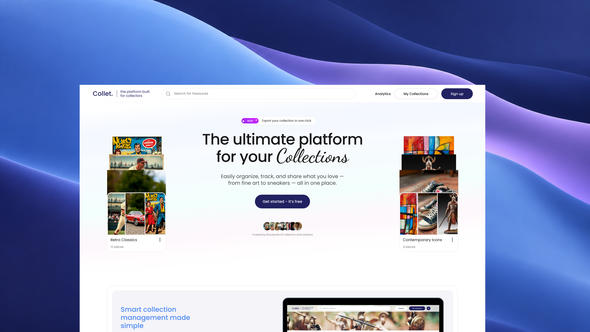
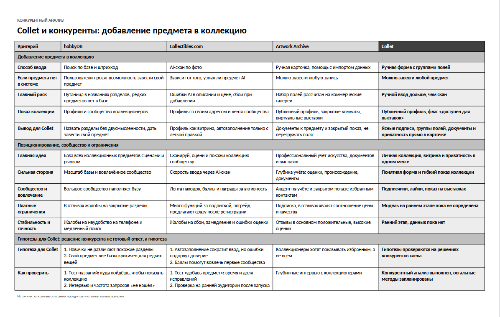
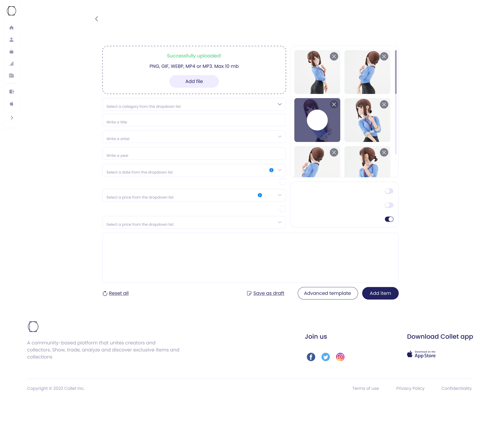
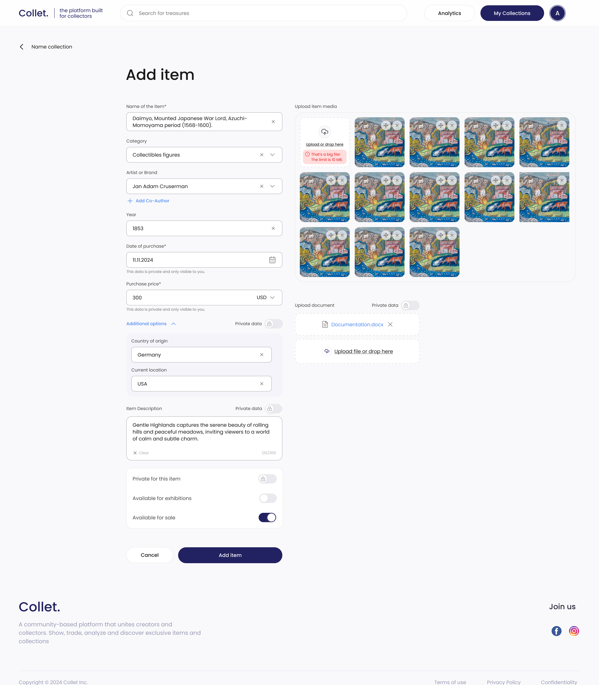
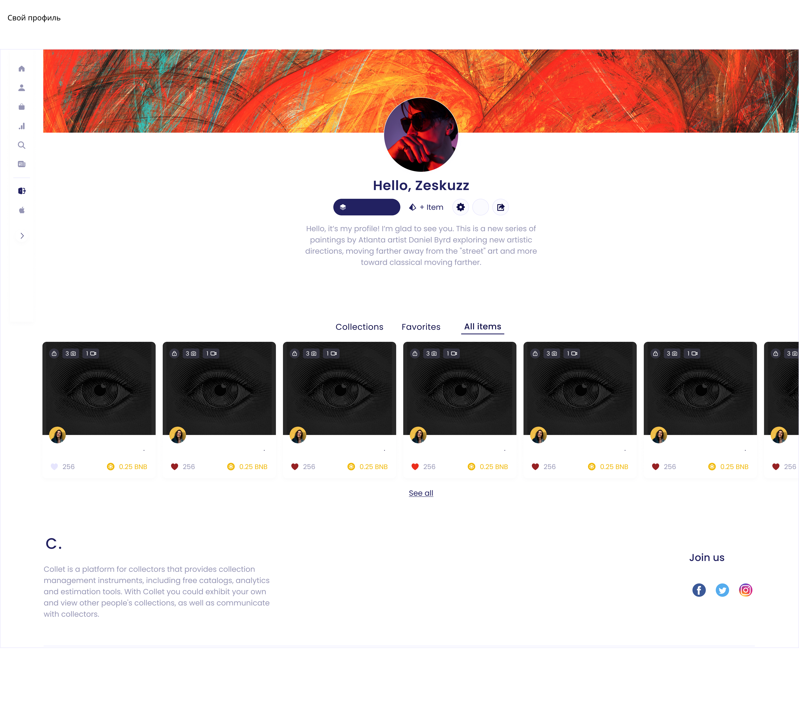
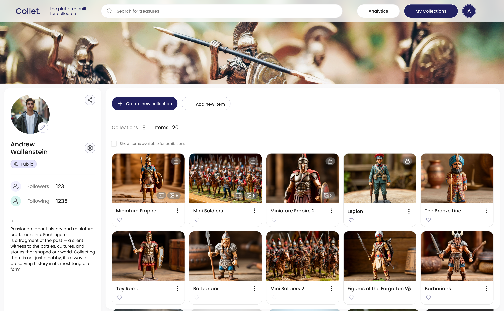
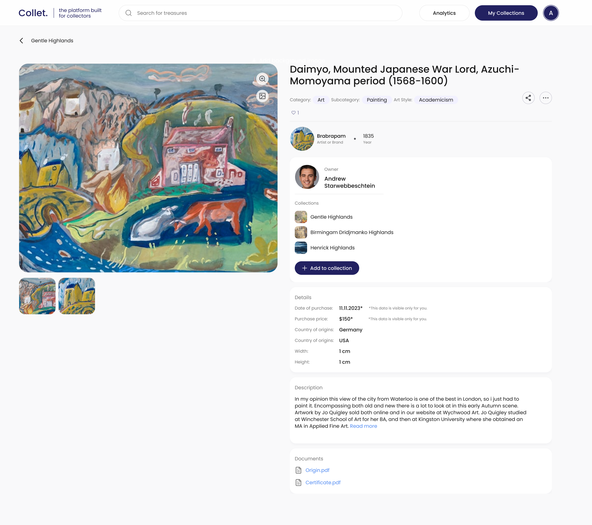

Спроектировала управление коллекциями и их структурой
Designed collection management and organization
Переработала добавление предметов, профиль коллекционера и карточку предмета. Связала личный учёт с публичным показом коллекции и настройками приватности отдельных данных.
Redesigned item entry, collector profiles and item pages. Connected personal record keeping with public collection display and field-level privacy controls.

Упорядочить продукт вокруг задач коллекционера
Organize the product around collectors’ needs
Collet развивался в период интереса к NFT и поддерживал в том числе цифровое коллекционирование. При этом платформе требовались понятные сценарии для владельцев физических предметов: вести каталог, хранить сведения о вещах и делиться коллекцией.
Collet developed during the NFT boom and also supported digital collecting. The platform needed clear workflows for physical-item collectors: maintaining a catalogue, keeping records and sharing their collections.
Стейкхолдеры предложили пересмотреть логику интерфейса с опорой на опыт других коллекционных платформ. Изменения затронули разные части продукта. Для кейса я выбрала три связанных примера: добавление предмета, профиль с каталогом и отображение данных в карточке.
Stakeholders asked for a more logical interface informed by other collecting platforms. The work spanned multiple areas. This case focuses on three connected examples: adding an item, the profile and catalogue, and the item detail page.
Я проектировала эти интерфейсы и согласовывала решения с проджект-менеджером, иногда напрямую со стейкхолдером. Подход к приватности отдельных полей мы сформировали совместно с проджектом. Решения проверяли и согласовывали внутри команды; описанные изменения работают в продукте.
I designed these interfaces and reviewed decisions with the project manager and, at times, a stakeholder. The project manager and I developed the field-level privacy approach together. The team reviewed the solutions, and the changes described here are implemented.
Сравнила подходы трёх платформ
Compared approaches across three platforms
Перед проектированием изучала, как hobbyDB, Collectibles.com и Artwork Archive решают добавление предметов, организацию каталога и показ коллекции. Ниже собраны выводы из рабочих заметок, оформленные для кейса.
Before designing, I reviewed how hobbyDB, Collectibles.com and Artwork Archive approached item entry, catalogue organization and collection display. The summary below presents findings from my working notes, organized for this case.

Что использовала в проектировании
What informed the design
- Добавление своего предмета: сохранить возможность вести каталог независимо от наличия объекта в общей базе.
- Own-item entry: support cataloguing even when an item is absent from a shared database.
- Понятный ручной ввод: сгруппировать поля и сделать подписи однозначными.
- Clear manual entry: group fields and make labels unambiguous.
- Личный учёт и публичный показ: связать документы с предметом и предусмотреть настройки видимости данных.
- Personal records and public display: attach documents to items and provide data visibility controls.
Сравнение помогло определить направления проектирования, но не подтверждало потребности пользователей Collet само по себе. Отдельным основанием для приватности были запросы коллекционеров: они не хотели выставлять все предметы напоказ. Вместе с проджектом мы развили эту задачу до управления видимостью отдельных данных.
The comparison informed design directions rather than proving Collet users’ needs. Collectors’ requests provided a separate reason to address privacy: they did not want to show every item publicly. Together with the project manager, I extended this into control over individual data fields.
Сначала основные сведения, затем детали
Essential information first, details next
В исходной форме поля шли плоским списком, встречались одинаковые подписи и переключатели без понятного объяснения. По интерфейсу было трудно определить назначение отдельных полей. Я пересобрала форму вокруг последовательности заполнения, а не перечня доступных атрибутов.
The original form presented a flat field list, repeated labels and unexplained toggles. The interface did not make the purpose of every field clear. I reorganized the form around the entry workflow rather than the list of available attributes.


- Смысловые группы. Сведения о предмете, данные о покупке и дополнительные характеристики разделены, чтобы пользователь мог заполнять их последовательно.
- Meaningful groups. Item information, purchase data and additional attributes are separated into a clear sequence.
- Дополнительные параметры по запросу. Второстепенные сведения вынесены в раскрываемый блок, чтобы они не конкурировали с основной частью формы.
- Additional options on demand. Secondary details sit in an expandable section rather than competing with the primary fields.
- Приватность рядом с данными. Для цены покупки, местоположения и описания предусмотрены отдельные настройки. Видимость можно выбрать там же, где вводятся сведения.
- Privacy beside the data. Purchase price, location and description have separate visibility settings, available at the point of entry.
В центре профиля сама коллекция
Put the collection at the center of the profile
В прежней структуре предметы находились ниже первого экрана, а оформление сохраняло акценты NFT-витрины. Я перенесла внимание на то, что человек собирает, и разделила задачи владельца каталога и посетителя профиля.
Previously, collection items sat below the first screen, while the presentation retained NFT storefront conventions. I shifted the focus to what the person collects and distinguished the catalogue owner’s tasks from the profile visitor’s needs.


- Коллекция выше в структуре. Предметы, их фотографии и названия помогают увидеть содержание каталога без предварительного изучения профиля.
- A more prominent collection. Item photos and names show what the catalogue contains without first having to explore the profile.
- Управление для владельца. Создание коллекции и добавление предмета выделены как основные действия. Счётчики коллекций и предметов дают обзор содержимого.
- Owner controls. Creating a collection and adding an item are primary actions. Collection and item counts provide an overview.
- Публичный показ. Профиль связывает информацию о коллекционере с его предметами. Фильтр доступности для выставок поддерживает отдельный сценарий показа коллекции.
- Public display. The profile connects the collector’s information with their items. An exhibition availability filter supports a distinct display workflow.
Сохранить контекст и правила доступа
Carry context and visibility rules through
Переработка формы должна была продолжаться в карточке предмета: введённые сведения необходимо показать понятно, а настройки приватности сохранить при просмотре.
The form redesign needed to carry through to the item page: entered information had to remain clear, with privacy settings reflected in the display.

- Создатель и владелец разделены. Автор или бренд и текущий владелец представлены как разные роли.
- Creator and owner are distinct. Artist or brand and current owner are presented as separate roles.
- Предмет связан с коллекциями. Один объект может входить в несколько коллекций одновременно.
- Items connect to collections. One item can belong to multiple collections.
- Приватные сведения обозначены явно. Владелец видит пометку о том, что данные доступны только ему. Документы прикреплены к самому предмету.
- Private information is explicitly marked. Owners can see which data is visible only to them. Documents are attached to the item itself.
Единая логика от ввода до показа коллекции
A consistent flow from entry to collection display
В продукте реализованы новая форма добавления, профиль с каталогом и карточка предмета. Они связаны общей структурой данных и настройками приватности: коллекционер может вести личный учёт и выбирать, какие сведения показывать другим.
The new item entry form, catalogue profile and item page are implemented. They share a consistent information structure and privacy controls, allowing collectors to keep personal records and choose which details to share.
Решения проходили проверку и согласование внутри команды. Доступа к продуктовой аналитике у меня нет, поэтому результат здесь описан через реализованные возможности. Изменение скорости заполнения, завершения формы и вовлечённости не измерено.
The team reviewed and approved the solutions. I do not have access to product analytics, so the outcome is described through implemented capabilities. Changes in entry speed, form completion and engagement have not been measured.
Для дальнейшей проверки я бы отслеживала завершение добавления предмета, время заполнения и ошибки, а также проверила на пользовательских сессиях, понятны ли настройки видимости владельцу коллекции.
For further validation, I would track item-entry completion, completion time and errors, and use user sessions to check whether collection owners understand the visibility controls.
Сайт платформы для коллекционеров.
The platform website for collectors.
Посмотреть IncolletVisit Incollet